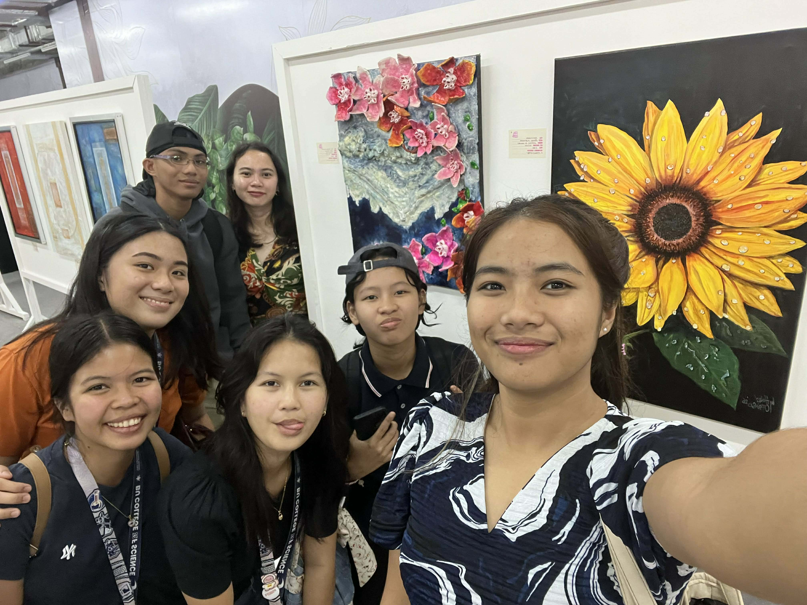
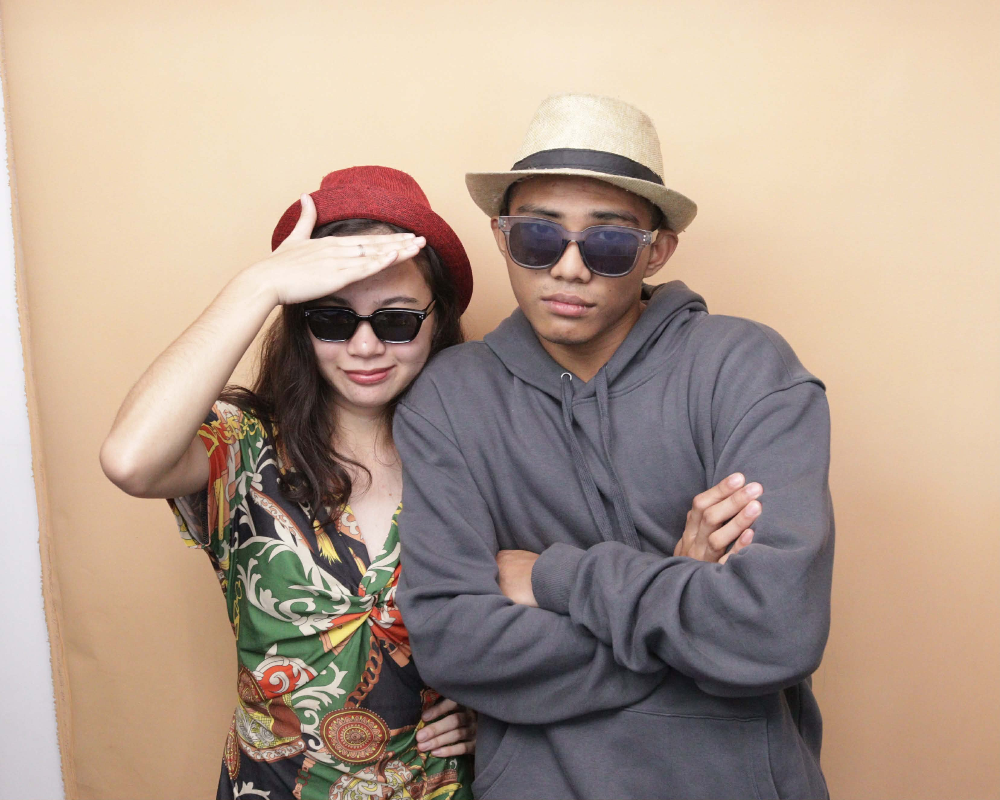

Nailabas sa gc ang biglaang plano ni Natalie. We had lunch together at may pa-ice cream pa si Prof.
Activity in UTS
Akala ko late na ako, mabuti na lang at nakasabay ko si Prof. sa labas ng classroom. Just in time para sa reporting ng isang group sa class namin. After their discussion, nag-bigay sila ng activity which is to write how we percieve ourselves inside the booklet and on the cover part, is where our partner writes how they perceive us.
CJ and I were partners for this activity. It was interesting to see how we see each other.
Lunch with "be kind always" gc
After morning class, nag-lunch kami ng sabay-sabay sa Ethics classroom. Naabutan namin si Prof. na nag-liligpit ng gamit and told us na if it's okay na mag-join sa amin. Of course it's okay! Tapos nagpa-bili pa siya ng ice cream for dessert.

Legazpi Art Pop Market
Natapos rin ang Sat. class. We decided to check out the Legazpi Art Pop Market. We didn't get to see everything since we arrived ng sobrang aga. 4pm na ata nag-start yung event and that time pauwi na kami since babyahe pa ng malayo. There were so many talented local artists showcasing their work – from paintings to handmade crafts.

We finished the day by strolling through the mall and CJ and I took photobooth pictures together. It's nice having a friend to share these little adventures with. The photobooth strips are now on my journal – a perfect reminder of a fun Saturday.

Sometimes the best days are the unplanned ones, filled with ice cream, art, and good company.
Can't wait for more weekends like this! Starting this blog feels like the right decision – I want to remember these days.
— Elaine